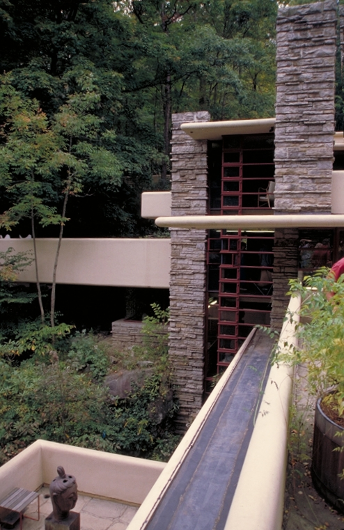
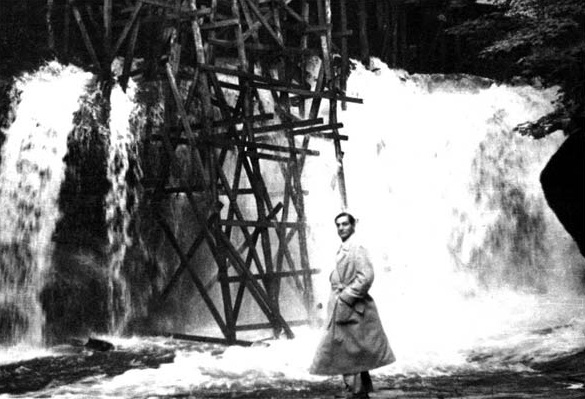

The strong horizontal and vertical lines are a distinctive feature of Fallingwater.
Wright designed the home above the waterfall, rather than below to afford a view of the cascades as Kaufmann had expected. It has been said that Kaufmann was initially very upset that Wright had designed the house to sit atop the falls. Kaufmann had wanted the house located on the southern bank of Bear Run, directly facing the falls. He told Wright that they were his favorite aspect of the property. The Kaufmanns planned to entertain large groups of people, so the house needed to be larger than the original plot allowed. Also, Mr. and Mrs. Kaufmann requested separate bedrooms, as well as a bedroom for their adult son, and an additional guest room, for a total of four bedrooms. A cantilevered structure was used to address these requests. The structural design for Fallingwater was undertaken by Wright in association with staff engineers Mendel Glickman and William Wesley Peters, who had been responsible for the columns featured in Wright’s revolutionary design for the Johnson Wax Headquarters. Preliminary plans were issued to Kaufmann for approval on October 15, 1935, after which Wright made an additional visit to the site and provided a cost estimate for the job. In December 1935, an old rock quarry was reopened to the west of the site to provide the stones needed for the house’s walls. Wright visited only periodically during construction, assigning his apprentice Robert Mosher as his permanent on-site representative. The final working drawings were issued by Wright in March 1936, with work beginning on the bridge and main house in April.
The construction was plagued by conflicts between Wright, Kaufmann, and the construction contractor. Uncomfortable with what he saw as Wright's insufficient experience using reinforced concrete, Kaufmann had the architect's daring cantilever design reviewed by a firm of consulting engineers. Upon receiving their report, Wright took offense, immediately requesting that Kaufmann return his drawings and indicating that he was withdrawing from the project. Kaufmann relented to Wright's gambit, and the engineer’s report was subsequently buried within a stone wall of the house.

Edgar J. Kaufmann, Sr. Overseeing the Construction of Fallingwater.
For the cantilevered floors, Wright and his team used upside-down T-shaped beams integrated into a monolithic concrete slab which formed both the ceiling of the space below and provided resistance against compression. The contractor, Walter Hall, also an engineer, produced independent computations and argued for increasing the reinforcing steel in the first floor’s slab. Wright refused the suggestion. While some sources state that the contractor quietly doubled the amount of reinforcement, others say that Kaufmann's consulting engineers – at Kaufmann's request – redrew Wright's reinforcing drawings and doubled the amount of steel specified by Wright. In addition, the contractor did not build in a slight upward incline in the formwork for the cantilever to compensate for its settling and deflection. Once the concrete formwork was removed, the cantilever developed a noticeable sag. Upon learning of the unapproved steel addition, Wright recalled Mosher. With Kaufmann’s approval, the consulting engineers arranged for the contractor to install a supporting wall under the main supporting beam for the west terrace. When Wright discovered it on a site visit, he had Mosher discreetly remove the top course of stones. When Kaufmann later confessed to what had been done, Wright showed him what Mosher had done and pointed out that the cantilever had held up for the past month under test loads without the wall’s support. The main house was completed in 1938, and the guest house was completed the following year.
The original estimated cost for building Fallingwater was $35,000. The final cost for the home and guest house was $155,000, which included $75,000 for the house; $22,000 for finishings and furnishings; $50,000 for the guest house, garage and servants' quarters; and an $8,000 architect's fee. From 1938 through 1941, more than $22,000 was spent on additional details and for changes in the hardware and lighting. The total cost of $155,000, adjusted for inflation, is equivalent to about $2.8 million in 2018. The cost of the house's restoration in 2001 was estimated to be $11.5 million (approximately $16.3 million in 2018).